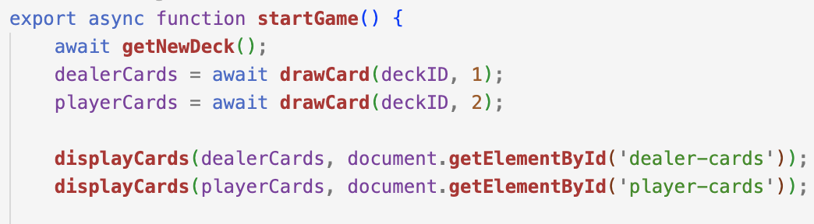

In the world of casino card games, blackjack holds a special place due to its simplicity and strategic elements. Whether you're a beginner or a seasoned player, understanding the rules and learning effective tips can significantly enhance your blackjack experience. In this blog article, we will delve into the fundamentals of blackjack, explore key rules, provide practical tips to improve your gameplay, and even showcase a code implementation of a blackjack game using HTML, CSS, and JavaScript.
When coding for this project I went with a simplistic CSS/Bootstrap design because I wanted to focus on the actual gameplay. The code for this project is mainly written in JavaScript with HTML being used for the main page and in event handlers to relay crucial game infomation. When implementing the buttons I relied on innerHTML in order for the page to respond to clicks that the user commits during the gameplay instead of using a separate view.js file.
All of the gameplay code is located in round.js. This file is initiated whenever the user loads or reloads the website. Once initiated the program uses Fetch API to retrieve a shuffled deck of cards from the Deck of Cards API (https://deckofcardsapi.com) and deal to the dealer and the player. When programming the game initially I had both cards showing for the dealer and the player. However, this wasnt ideal as traditionally the dealer's second card is hidden until the player stands. In order to simulate this gameplay I dealt the dealer one card while dealing the player two cards. This allowed the game to resemble the traditional gameplay seen in real life.
Explain the integration of a card API (Deck of Cards API) to fetch and display the card images in the game.
Mastering the basics of blackjack is a rewarding journey for both casual players and enthusiasts. By understanding the rules, implementing effective strategies, and leveraging practical tips, you can elevate your blackjack skills and increase your chances of success at the tables. Additionally, the showcased implementation of a blackjack game provides a hands-on demonstration of the game mechanics and serves as an enjoyable learning experience. So, embrace the excitement of blackjack, apply your knowledge, and aim for that winning hand!